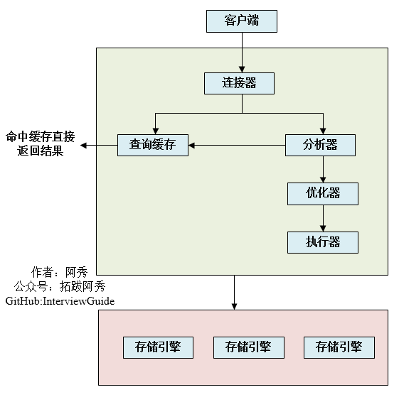
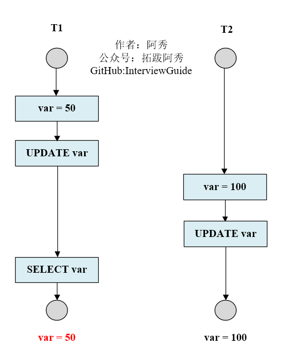

MySQL
这是六则或许对你有些许帮助的信息:
⭐️1、阿秀与朋友合作开发了一个编程资源网站，目前已经收录了很多不错的学习资源和黑科技（附带下载地址），如过你想要寻求合适的编程资源，欢迎体验以及推荐自己认为不错的资源，众人拾柴火焰高，我为人人，人人为我🔥！
2、👉23年5月份阿秀从字节跳动离职跳槽到某外企期间，为方便自己找工作，增加上岸几率，我自己从0开发了一个互联网中大厂面试真题解析网站，包括两个前端和一个后端。能够定向查看某些公司的某些岗位面试真题，比如我想查一下行业为互联网，公司为字节跳动，考察岗位为后端，考察时间为最近一年之类的面试题有哪些？
4、😍免费分享阿秀个人学习计算机以来收集到的免费学习资源，点此白嫖；也记录一下自己以前买过的不错的计算机书籍、网络专栏和垃圾付费专栏；也记录一下自己以前买过的不错的计算机书籍、网络专栏和垃圾付费专栏
5、🚀如果你想在校招中顺利拿到更好的offer，阿秀建议你多看看前人踩过的坑和留下的经验，事实上你现在遇到的大多数问题你的学长学姐师兄师姐基本都已经遇到过了。
6、🔥 欢迎准备计算机校招的小伙伴加入我的学习圈子，一个人踽踽独行不如一群人报团取暖，圈子里沉淀了很多过去21/22/23/24/25届学长学姐的经验和总结，好好跟着走下去的，最后基本都可以拿到不错的offer！如果你需要《阿秀的学习笔记》网站中📚︎校招八股文相关知识点的PDF版本的话，可以点此下载 。
1、关系型和非关系型数据库的区别你了解多少？
- 关系型数据库的优点
- 容易理解。因为它采用了关系模型来组织数据。
- 可以保持数据的一致性。
- 数据更新的开销比较小。
- 支持复杂查询（带where子句的查询）
- 非关系型数据库的优点
- 不需要经过SQL层的解析，读写效率高。
- 基于键值对，数据的扩展性很好。
- 可以支持多种类型数据的存储，如图片，文档等等。
2、什么是非关系型数据库？
非关系型数据库也叫NOSQL，采用键值对的形式进行存储。
它的读写性能很高，易于扩展，可分为内存性数据库以及文档型数据库，比如 Redis，Mongodb，HBase等等。
适合使用非关系型数据库的场景：
- 日志系统
- 地理位置存储
- 数据量巨大
- 高可用
3、为什么使用索引？
- 通过创建唯一性索引，可以保证数据库表中每一行数据的唯一性。
- 可以大大加快数据的检索速度，这也是创建索引的最主要的原因。
- 帮助服务器避免排序和临时表
- 将随机IO变为顺序IO。
- 可以加速表和表之间的连接，特别是在实现数据的参考完整性方面特别有意义。
4、Innodb为什么要用自增id作为主键？
如果表使用自增主键，那么每次插入新的记录，记录就会顺序添加到当前索引节点的后续位置，当一页写满，就会自动开辟一个新的页。 如果使用非自增主键（如果身份证号或学号等），由于每次插入主键的值近似于随机，因此每次新纪录都要被插到现有索引页得中间某个位置， 频繁的移动、分页操作造成了大量的碎片，得到了不够紧凑的索引结构，后续不得不通过OPTIMIZE TABLE（optimize table）来重建表并优化填充页面。
5、MyISAM和InnoDB实现B树索引方式的区别是什么？
-
MyISAM，B+Tree叶节点的data域存放的是数据记录的地址，在索引检索的时候，首先按照B+Tree搜索算法搜索索引，如果指定的key存在，则取出其data域的值，然后以data域的值为地址读取相应的数据记录，这被称为“非聚簇索引”
-
InnoDB，其数据文件本身就是索引文件，相比MyISAM，索引文件和数据文件是分离的，其表数据文件本身就是按B+Tree组织的一个索引结构，树的节点data域保存了完整的数据记录，这个索引的key是数据表的主键，因此InnoDB表数据文件本身就是主索引，这被称为“聚簇索引”或者聚集索引，而其余的索引都作为辅助索引，辅助索引的data域存储相应记录主键的值而不是地址，这也是和MyISAM不同的地方。
在根据主索引搜索时，直接找到key所在的节点即可取出数据；在根据辅助索引查找时，则需要先取出主键的值，再走一遍主索引。因此，在设计表的时候，不建议使用过长的字段为主键，也不建议使用非单调的字段作为主键，这样会造成主索引频繁分裂。
6、说一下MySQL是如何执行一条SQL的？具体步骤有哪些？

Server层按顺序执行sql的步骤为：
- 客户端请求->
- 连接器（验证用户身份，给予权限） ->
- 查询缓存（存在缓存则直接返回，不存在则执行后续操作）->
- 分析器（对SQL进行词法分析和语法分析操作） ->
- 优化器（主要对执行的sql优化选择最优的执行方案方法） ->
- 执行器（执行时会先看用户是否有执行权限，有才去使用这个引擎提供的接口）->
- 去引擎层获取数据返回（如果开启查询缓存则会缓存查询结果）
简单概括：
- 连接器：管理连接、权限验证；
- 查询缓存：命中缓存则直接返回结果；
- 分析器：对SQL进行词法分析、语法分析；（判断查询的SQL字段是否存在也是在这步）
- 优化器：执行计划生成、选择索引；
- 执行器：操作引擎、返回结果；
- 存储引擎：存储数据、提供读写接口。
7、你了解MySQL的内部构造吗？一般可以分为哪两个部分？
可以分为服务层和存储引擎层两部分，其中：
服务层包括连接器、查询缓存、分析器、优化器、执行器等，涵盖MySQL的大多数核心服务功能，以及所有的内置函数（如日期、时间、数学和加密函数等），所有跨存储引擎的功能都在这一层实现，比如存储过程、触发器、视图等。
存储引擎层负责数据的存储和提取。其架构模式是插件式的，支持InnoDB、MyISAM、Memory等多个存储引擎。现在最常用的存储引擎是InnoDB，它从MySQL 5.5.5版本开始成为了默认的存储引擎。
8、说一说Drop、Delete与Truncate的共同点和区别
第一种回答
Drop、Delete、Truncate都表示删除，但是三者有一些差别：
Delete用来删除表的全部或者一部分数据行，执行delete之后，用户需要提交(commmit)或者回滚(rollback)来执行删除或者撤销删除，会触发这个表上所有的delete触发器。
Truncate删除表中的所有数据，这个操作不能回滚，也不会触发这个表上的触发器，TRUNCATE比delete更快，占用的空间更小。
Drop命令从数据库中删除表，所有的数据行，索引和权限也会被删除，所有的DML触发器也不会被触发，这个命令也不能回滚。
因此，在不再需要一张表的时候，用Drop；在想删除部分数据行时候，用Delete；在保留表而删除所有数据的时候用Truncate。
第二种回答
- Drop直接删掉表;
- Truncate删除表中数据，再插入时自增长id又从1开始 ;
- Delete删除表中数据，可以加where字句。
具体解析
- DELETE语句执行删除的过程是每次从表中删除一行，并且同时将该行的删除操作作为事务记录在日志中保存以便进行进行回滚操作。TRUNCATE TABLE 则一次性地从表中删除所有的数据并不把单独的删除操作记录记入日志保存，删除行是不能恢复的。并且在删除的过程中不会激活与表有关的删除触发器。执行速度快。
- 表和索引所占空间。当表被TRUNCATE 后，这个表和索引所占用的空间会恢复到初始大小，而DELETE操作不会减少表或索引所占用的空间。drop语句将表所占用的空间全释放掉。
- 一般而言，drop > truncate > delete
- 应用范围。TRUNCATE 只能对TABLE；DELETE可以是table和view
- TRUNCATE 和DELETE只删除数据，而DROP则删除整个表（结构和数据）。
- truncate与不带where的delete ：只删除数据，而不删除表的结构（定义）drop语句将删除表的结构被依赖的约束（constrain),触发器（trigger)索引（index);依赖于该表的存储过程/函数将被保留，但其状态会变为：invalid。
- delete语句为DML（Data Manipulation Language),这个操作会被放到 rollback segment中,事务提交后才生效。如果有相应的 trigger，执行的时候将被触发。
- truncate、drop是DDL（Data Define Language),操作立即生效，原数据不放到 rollback segment中，不能回滚
- 在没有备份情况下，谨慎使用 drop 与 truncate。要删除部分数据行采用delete且注意结合where来约束影响范围。回滚段要足够大。要删除表用drop;若想保留表而将表中数据删除，如果与事务无关，用truncate即可实现。如果和事务有关，或老是想触发trigger,还是用delete。
- Truncate table 表名 速度快,而且效率高,因为: truncate table 在功能上与不带 WHERE 子句的 DELETE 语句相同：二者均删除表中的全部行。但 TRUNCATE TABLE 比 DELETE 速度快，且使用的系统和事务日志资源少。DELETE 语句每次删除一行，并在事务日志中为所删除的每行记录一项。TRUNCATE TABLE 通过释放存储表数据所用的数据页来删除数据，并且只在事务日志中记录页的释放。
- TRUNCATE TABLE 删除表中的所有行，但表结构及其列、约束、索引等保持不变。新行标识所用的计数值重置为该列的种子。如果想保留标识计数值，请改用 DELETE。如果要删除表定义及其数据，请使用 DROP TABLE 语句。
- 对于由 FOREIGN KEY 约束引用的表，不能使用 TRUNCATE TABLE，而应使用不带 WHERE 子句的 DELETE 语句。由于 TRUNCATE TABLE 不记录在日志中，所以它不能激活触发器。
9、MySQL优化了解吗？说一下从哪些方面可以做到性能优化？
- 为搜索字段创建索引
- 避免使用 Select *，列出需要查询的字段
- 垂直分割分表
- 选择正确的存储引擎
10、数据库隔离级别
- 未提交读，事务中发生了修改，即使没有提交，其他事务也是可见的，比如对于一个数A原来50修改为100，但是我还没有提交修改，另一个事务看到这个修改，而这个时候原事务发生了回滚，这时候A还是50，但是另一个事务看到的A是100.可能会导致脏读、幻读或不可重复读
- 提交读，对于一个事务从开始直到提交之前，所做的任何修改是其他事务不可见的，举例就是对于一个数A原来是50，然后提交修改成100，这个时候另一个事务在A提交修改之前，读取的A是50，刚读取完，A就被修改成100，这个时候另一个事务再进行读取发现A就突然变成100了；可以阻止脏读，但是幻读或不可重复读仍有可能发生
- 重复读，就是对一个记录读取多次的记录是相同的，比如对于一个数A读取的话一直是A，前后两次读取的A是一致的；可以阻止脏读和不可重复读，但幻读仍有可能发生
- 可串行化读，在并发情况下，和串行化的读取的结果是一致的，没有什么不同，比如不会发生脏读和幻读；该级别可以防止脏读、不可重复读以及幻读
| 隔离级别 | 脏读 | 不可重复读 | 幻影读 |
|---|---|---|---|
| READ-UNCOMMITTED 未提交读 | √ | √ | √ |
| READ-COMMITTED 提交读 | × | √ | √ |
| REPEATABLE-READ 重复读 | × | × | √ |
| SERIALIZABLE 可串行化读 | × | × | × |
MySQL InnoDB 存储引擎的默认支持的隔离级别是 REPEATABLE-READ（可重读）
这里需要注意的是：与 SQL 标准不同的地方在于InnoDB 存储引擎在 REPEATABLE-READ（可重读）事务隔离级别 下使用的是Next-Key Lock 锁算法，因此可以避免幻读的产生，这与其他数据库系统(如 SQL Server)是不同的。所以 说InnoDB 存储引擎的默认支持的隔离级别是 REPEATABLE-READ（可重读） 已经可以完全保证事务的隔离性要 求，即达到了 SQL标准的SERIALIZABLE(可串行化)隔离级别。
因为隔离级别越低，事务请求的锁越少，所以大部分数据库系统的隔离级别都是READ-COMMITTED(读取提交内 容):，但是你要知道的是InnoDB 存储引擎默认使用 REPEATABLE-READ（可重读）并不会有任何性能损失。
InnoDB 存储引擎在分布式事务 的情况下一般会用到SERIALIZABLE(可串行化)隔离级别。
11、都知道数据库索引采用B+树而不是B树，原因也有很多，主要原因是什么？
主要原因：B+树只要遍历叶子节点就可以实现整棵树的遍历，而且在数据库中基于范围的查询是非常频繁的，而B树只能中序遍历所有节点，效率太低。
12、文件索引和数据库索引为什么使用B+树?（第9个问题的详细回答）
文件与数据库都是需要较大的存储，也就是说，它们都不可能全部存储在内存中，故需要存储到磁盘上。而所谓索引，则为了数据的快速定位与查找，那么索引的结构组织要尽量减少查找过程中磁盘I/O的存取次数，因此B+树相比B树更为合适。数据库系统巧妙利用了局部性原理与磁盘预读原理，将一个节点的大小设为等于一个页，这样每个节点只需要一次I/O就可以完全载入，而红黑树这种结构，高度明显要深的多，并且由于逻辑上很近的节点(父子)物理上可能很远，无法利用局部性。
最重要的是，B+树还有一个最大的好处：方便扫库。
B树必须用中序遍历的方法按序扫库，而B+树直接从叶子结点挨个扫一遍就完了，B+树支持range-query非常方便，而B树不支持，这是数据库选用B+树的最主要原因。
B+树查找效率更加稳定，B树有可能在中间节点找到数据，稳定性不够。
B+tree的磁盘读写代价更低：B+tree的内部结点并没有指向关键字具体信息的指针(红色部分)，因此其内部结点相对B 树更小。
如果把所有同一内部结点的关键字存放在同一块盘中，那么盘块所能容纳的关键字数量也越多。一次性读入内存中的需要查找的关键字也就越多，相对来说IO读写次数也就降低了；
B+tree的查询效率更加稳定：由于内部结点并不是最终指向文件内容的结点，而只是叶子结点中关键字的索引，所以，任何关键字的查找必须走一条从根结点到叶子结点的路。所有关键字查询的路径长度相同，导致每一个数据的查询效率相当。
13、听说过视图吗？那游标呢？
视图是一种虚拟的表，通常是有一个表或者多个表的行或列的子集，具有和物理表相同的功能 游标是对查询出来的结果集作为一个单元来有效的处理。一般不使用游标，但是需要逐条处理数据的时候，游标显得十分重要。
14、MySQL中为什么要有事务回滚机制？
而在 MySQL 中，恢复机制是通过回滚日志（undo log）实现的，所有事务进行的修改都会先记录到这个回滚日志中，然后在对数据库中的对应行进行写入。 当事务已经被提交之后，就无法再次回滚了。
回滚日志作用： 1、能够在发生错误或者用户执行 ROLLBACK 时提供回滚相关的信息
2、在整个系统发生崩溃、数据库进程直接被杀死后，当用户再次启动数据库进程时，还能够立刻通过查询回滚日志将之前未完成的事务进行回滚，这也就需要回滚日志必须先于数据持久化到磁盘上，是我们需要先写日志后写数据库的主要原因。
15、数据库引擎InnoDB与MyISAM的区别
InnoDB
- 是 MySQL 默认的事务型存储引擎，只有在需要它不支持的特性时，才考虑使用其它存储引擎。
- 实现了四个标准的隔离级别，默认级别是可重复读(REPEATABLE READ)。在可重复读隔离级别下，通过多版本并发控制(MVCC)+ 间隙锁(Next-Key Locking)防止幻影读。
- 主索引是聚簇索引，在索引中保存了数据，从而避免直接读取磁盘，因此对查询性能有很大的提升。
- 内部做了很多优化，包括从磁盘读取数据时采用的可预测性读、能够加快读操作并且自动创建的自适应哈希索引、能够加速插入操作的插入缓冲区等。
- 支持真正的在线热备份。其它存储引擎不支持在线热备份，要获取一致性视图需要停止对所有表的写入，而在读写混合场景中，停止写入可能也意味着停止读取。
MyISAM
- 设计简单，数据以紧密格式存储。对于只读数据，或者表比较小、可以容忍修复操作，则依然可以使用它。
- 提供了大量的特性，包括压缩表、空间数据索引等。
- 不支持事务。
- 不支持行级锁，只能对整张表加锁，读取时会对需要读到的所有表加共享锁，写入时则对表加排它锁。但在表有读取操作的同时，也可以往表中插入新的记录，这被称为并发插入(CONCURRENT INSERT)。
总结
- 事务: InnoDB 是事务型的，可以使用
Commit和Rollback语句。 - 并发: MyISAM 只支持表级锁，而 InnoDB 还支持行级锁。
- 外键: InnoDB 支持外键。
- 备份: InnoDB 支持在线热备份。
- 崩溃恢复: MyISAM 崩溃后发生损坏的概率比 InnoDB 高很多，而且恢复的速度也更慢。
- 其它特性: MyISAM 支持压缩表和空间数据索引。
16、数据库并发事务会带来哪些问题？
数据库并发会带来脏读、幻读、丢弃更改、不可重复读这四个常见问题，其中：
脏读：在第一个修改事务和读取事务进行的时候，读取事务读到的数据为100，这是修改之后的数据，但是之后该事务满足一致性等特性而做了回滚操作，那么读取事务得到的结果就是脏数据了。
幻读：一般是T1在某个范围内进行修改操作（增加或者删除），而T2读取该范围导致读到的数据是修改之间的了，强调范围。
丢弃修改：两个写事务T1 T2同时对A=0进行递增操作，结果T2覆盖T1，导致最终结果是1 而不是2，事务被覆盖
不可重复读：T2 读取一个数据，然后T1 对该数据做了修改。如果 T2 再次读取这个数据，此时读取的结果和第一次读取的结果不同。
脏读

第一个事务首先读取var变量为50，接着准备更新为100的时，并未提交，第二个事务已经读取var为100，此时第一个事务做了回滚。最终第二个事务读取的var和数据库的var不一样。
幻读（幻影读）

T1 读取某个范围的数据，T2 在这个范围内插入新的数据，T1 再次读取这个范围的数据，此时读取的结果和和第一次读取的结果不同。
丢弃修改

T1 和 T2 两个事务都对一个数据进行修改，T1 先修改，T2 随后修改，T2 的修改覆盖了 T1 的修改。例如：事务1读取某表中的数据A=50，事务2也读取A=50，事务1修改A=A+50，事务2也修改A=A+50，最终结果A=100，事务1的修改被丢失。
不可重复读

T2 读取一个数据，T1 对该数据做了修改。如果 T2 再次读取这个数据，此时读取的结果和第一次读取的结果不同。
17、数据库悲观锁和乐观锁的原理和应用场景分别有什么？
悲观锁，先获取锁，再进行业务操作，一般就是利用类似 SELECT … FOR UPDATE 这样的语句，对数据加锁，避免其他事务意外修改数据。 当数据库执行SELECT … FOR UPDATE时会获取被select中的数据行的行锁，select for update获取的行锁会在当前事务结束时自动释放，因此必须在事务中使用。
乐观锁，先进行业务操作，只在最后实际更新数据时进行检查数据是否被更新过。Java 并发包中的 AtomicFieldUpdater 类似，也是利用 CAS 机制，并不会对数据加锁，而是通过对比数据的时间戳或者版本号，来实现乐观锁需要的版本判断。
18、MySQL索引主要使用的两种数据结构是什么？
1、哈希索引，对于哈希索引来说，底层的数据结构肯定是哈希表，因此在绝大多数需求为单条记录查询的时候，可以选择哈希索引，查询性能最快；其余大部分场景，建议选择BTree索引
2、BTree索引，Mysql的BTree索引使用的是B树中的B+Tree，BTREE索引就是一种将索引值按一定的算法，存入一个树形的数据结构中（二叉树），每次查询都是从树的入口root开始，依次遍历node，获取leaf。
但对于主要的两种存储引擎（MyISAM和InnoDB）的实现方式是不同的。
19、数据库为什么要进行分库和分表呢？都放在一个库或者一张表中不可以吗？
分库与分表的目的在于，减小数据库的单库单表负担，提高查询性能，缩短查询时间。
通过分表，可以减少数据库的单表负担，将压力分散到不同的表上，同时因为不同的表上的数据量少了，起到提高查询性能，缩短查询时间的作用，此外，可以很大的缓解表锁的问题。
分表策略可以归纳为垂直拆分和水平拆分：
1、水平分表：取模分表就属于随机分表，而时间维度分表则属于连续分表。 如何设计好垂直拆分，我的建议：将不常用的字段单独拆分到另外一张扩展表. 将大文本的字段单独拆分到另外一张扩展表, 将不经常修改的字段放在同一张表中，将经常改变的字段放在另一张表中。 对于海量用户场景，可以考虑取模分表，数据相对比较均匀，不容易出现热点和并发访问的瓶颈。
2、库内分表，仅仅是解决了单表数据过大的问题，但并没有把单表的数据分散到不同的物理机上，因此并不能减轻 MySQL 服务器的压力，仍然存在同一个物理机上的资源竞争和瓶颈，包括 CPU、内存、磁盘 IO、网络带宽等。
补充：分库与分表带来的分布式困境与应对之策有哪些？
数据迁移与扩容问题----一般做法是通过程序先读出数据，然后按照指定的分表策略再将数据写入到各个分表中。 分页与排序问题----需要在不同的分表中将数据进行排序并返回，并将不同分表返回的结果集进行汇总和再次排序，最后再返回给用户。
20、不可重复读和幻读区别是什么？可以举个例子吗？
不可重复读的重点是修改，幻读的重点在于新增或者删除。
例1（同样的条件, 你读取过的数据, 再次读取出来发现值不一样了 ）：事务1中的A先生读取自己的工资为 1000的操作还没完成，事务2中的B先生就修改了A的工资为2000，导致A再读自己的工资时工资变为 2000；这就是不可重复读。
例2（同样的条件, 第1次和第2次读出来的记录数不一样 ）：假某工资单表中工资大于3000的有4人，事务1读取了所有工资大于3000的人，共查到4条记录，这时事务2 又插入了一条工资大于3000的记录，事务1再次读取时查到的记 录就变为了5条，这样就导致了幻读。